A diferencia de la Realidad Virtual, la AR está presente en muchos más ámbitos, debido a su versatilidad y a su ayuda a nuestro mundo, sin ser una inmersión en un mundo virtual. Se mueve en campos tan diversos como los proyectos educativos, ya que ayuda a que los más jóvenes aprendan, de una forma diferente y visual. Obviamente, como no podía ser de otro modo, en el sector del entretenimiento es ampliamente utilizada, llegando a campos de altísima importancia como la ingeniería o la medicina, pasando por la arquitectura.
Aplicaciones de la Realidad Aumentada
-Apps de realidad aumentada para Android-
Ingress
Fue una de las aplicaciones punteras en el mundo de la realidad aumentada, y ha sido uno de los juegos en los que se ha inspirado el archiconocido Pokemon Go. De hecho, ambos han sido realizados por la misma desarrolladora, Niantic Labs.
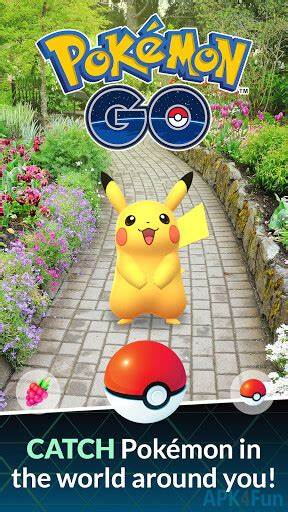Star Walk
¿A quién no le gusta mirar al cielo y contemplan a las estrellas? Pues esta app de realidad aumentada permite precisamente eso. Para todos aquellos aficionados a la astronomía, Star Walk permite ver y aprender mucha más información acerca de estrellas, constelaciones, planetas, cometas y más cuerpos celestes.
SketchAR
SketchAR es una de las apps de realidad aumentada que te permiten dibujar sin ser un as con el lápiz. Gracias a ella puedes ver cualquier diseño que quieras plasmado en el papel. Lo único que tienes que hacer es enfocar al papel con tu teléfono móvil y calcar el dibujo que quieras hacer. Puedes ver mejor cómo funciona esta app de realidad
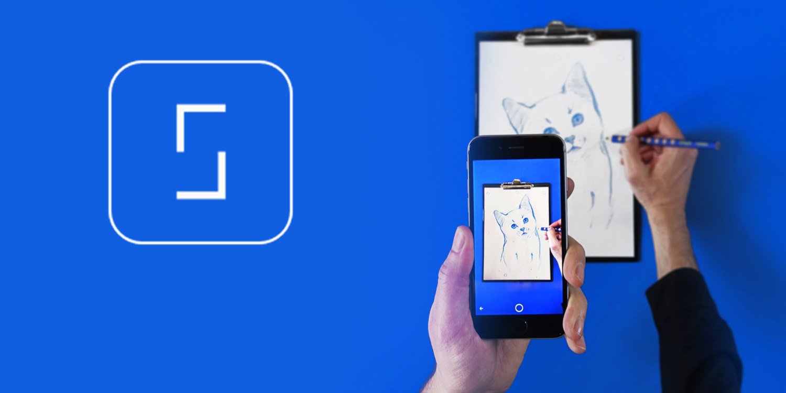Google Lens
Google Lens es una aplicación de realidad virtual creada por el gigante tecnológico. Su funcionamiento es sencillo, pero a la vez ofrece múltiples posibilidades
Al enfocar a un objeto, persona, animal o texto la app utiliza su sistema de machine learning para reconocerlo, y ofrecer distintas acciones a realizar. Es decir, no sugiere acciones genéricas, sino que las adapta al objeto que estés enfocando.
Además, es compatible con otras aplicaciones como Google Fotos, Google Assistant o Google Maps. 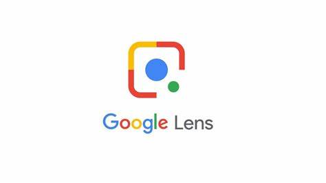AR Plan 3D
Se trata de una aplicación gracias a la cual puedes medir cualquier sala de forma rápida y con la máxima exactitud. Una vez definidas las medidas de la estancia, puedes crear planos de planta en 2D o 3D. Otras opciones son la posibilidad de medir puertas y ventajas o de compartir la información a través de redes sociales o por correo electrónico.
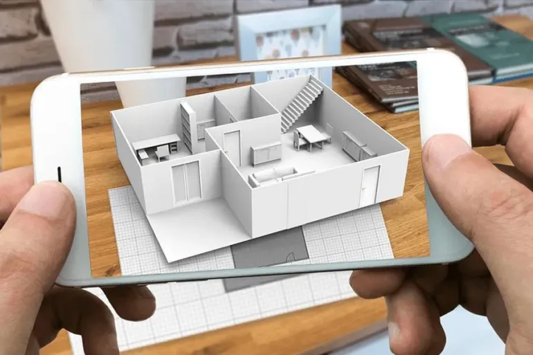Reality Composer
Como su propio nombre indica, Reality Composer es un programa de realidad virtual que permite crear objetos para añadirlos al entorno virtual. Con esta app se pueden crear objetos virtuales en formato .USDZ y editables en herramientas de diseño 3D. Los objetos creados se pueden editar desde el propio programa, modificando su diseño, tamaño o las acciones que harán al interactuar con ellos.
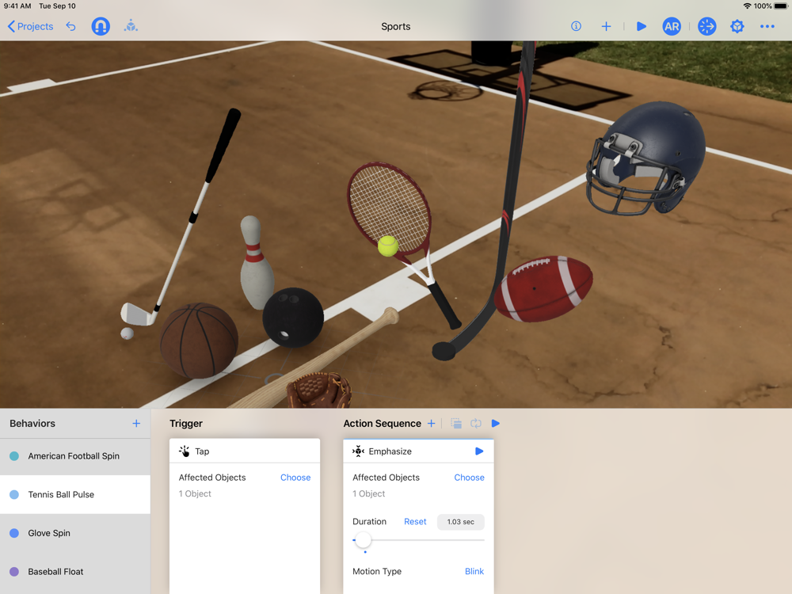Usos Actuales
La tecnología de la realidad aumentada tiene un potencial comercial ingente en un amplio abanico de industrias: desde la apertura de nuevos canales de marketing a la mejora de los procesos de formación de los empleados.
-Usos de la Realidad Aumentada-
Entretenimiento
Los dispositivos y las aplicaciones de realidad aumentada pueden identificar no solo las especies de las plantas sino también productos.
Con la realidad aumentada, todos los artículos que se vendieron se convierten en un anuncio andante cuando un cliente potencial puede usar sus anteojos de realidad aumentada o la cámara de su smartphone para identificar el artículo y dónde puede comprarlo.Las pruebas virtuales basadas en la realidad aumentada permiten a los clientes probarse una prenda para ver cómo les queda. Los clientes pueden probarse zapatos mediante una experiencia de realidad aumentada en su iPhone, por ejemplo. Las aplicaciones de realidad aumentada también aumentan el potencial de interacción con los clientes, quizás con sugerencias de que, si un jersey verde no les queda bien, pueden intentar probarse el azul a ver qué pasa.
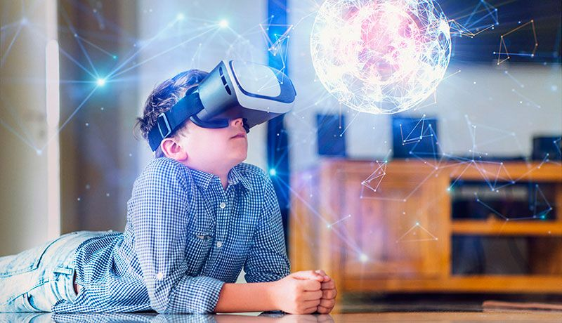Fabricación
La realidad aumentada también puede servir para crear una versión mejorada de la formación de los empleados en tiempo real. Muchos de nosotros nos pegamos con los manuales de los electrodomésticos de la cocina: los retos pueden ser incluso mayores cuando hablamos de aprender a manejar una máquina en una línea de montaje. La realidad aumentada hace que la formación sea más interactiva y más clara. En lugar de intentar averiguar si estás sujetando un dispositivo correctamente descifrando los dibujos correspondientes en un manual, un tutor virtual con tecnología de realidad aumentada puede informarte con toda amabilidad de que tienes que voltearlo en otra dirección.
Marketing y Publicidad
La realidad aumentada ayuda a las marcas a conectar directamente con sus consumidores, mejorar el posicionamiento y crear experiencias memorables a través de sus productos, publicidad, eventos y activaciones. En plena era digital, la realidad aumentada nos ofrece múltiples posibilidades para llegar a un espectador, que exige ser no sólo consumidor de las campañas, sino partícipe mismo de la publicidad.
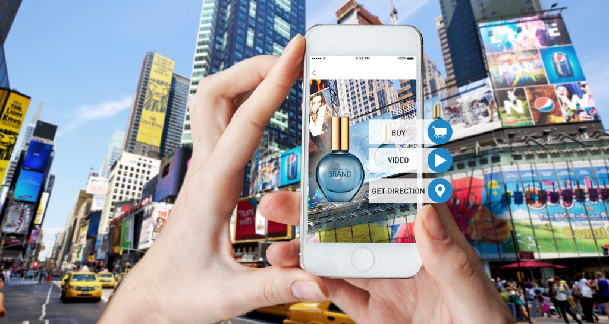Sector de la Salud
Las tecnologías de realidad aumentada van a jugar un importante papel en el desarrollo de aplicaciones como la telemedicina o la formación sanitaria. Este mercado y sus usos en el sector de la salud podría generar unos ingresos de unos 10,000 millones de dólares para 2024. Los profesionales de la salud, por ejemplo, puede aprovechar y visualizar determinados datos clínicos en el campo de las cirugías, con el fin de obtener diagnósticos más precisos. Además, los equipos de visualización de realidad aumentada ofrecen una gran oportunidad de crecimiento, ya que resultarán muy útiles en la planificación de hospitales y en escenarios como el desarrollo y el examen de fármacos, algo muy necesario en estos momentos en que la vacuna contra la Covid-19 está en el momento de su máxima expansión mundial.
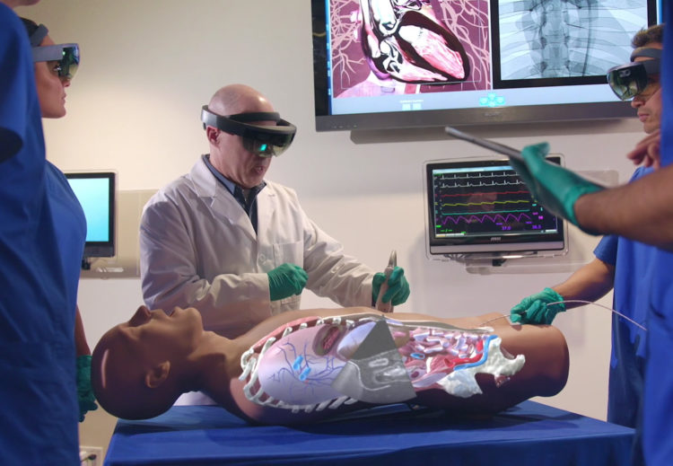Sector Educativo
-Realidad Aumentada en Sectores Educativos-
Educación
La realidad aumentada en educación forma parte de lo que se denominan pedagogías emergentes. Estas técnicas de enseñanza se definen como aquellas ideas pedagógicas que surgen alrededor de las Tecnologías de la Información y que proponen nuevos enfoques educativos basados en la colaboración, interacción, creatividad e innovación.
El objetivo de la realidad aumentada en educación es construir entornos con un alto grado de participación e interactividad, en los que el alumno sea capaz de construir, diseñar, modificar, experimentar e involucrarse de forma mucho más activa en el proceso de aprendizaje.
En este sentido, destaca su capacidad para crear los que se denominan aulas interactivas o virtuales, las cuáles proporcionan una mayor inmersión a los alumnos y potencian su interés en las materias. A continuación profundizamos más en la relación que existe entre realidad aumentada y educación.
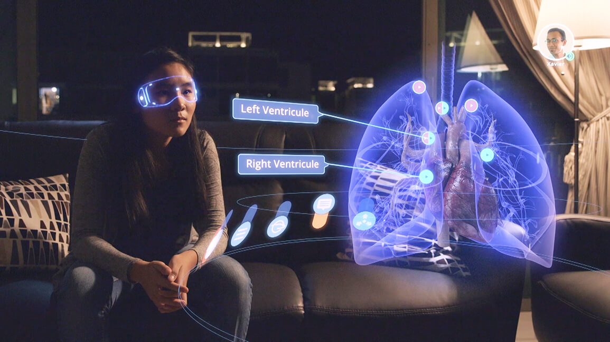¿De qué forma se pueden integrar realidad aumentada y educación?
La realidad aumentada es una tecnología relativamente joven. Hace años que se emplea en el ámbito educativo, pero no hay duda de que su implementación es todavía escasa. Todavía queda mucho camino por recorrer para aprovechar esta tecnología en el aula, pero ya existen numerosas formas de integrar la realidad aumentada en la educación.
Libros de Texto
Una de las formas más habituales de integrar la realidad aumentada en educación es a través de marcadores en los libros de texto. Se suelen utilizar códigos QR que, al ser enfocados con el teléfono móvil, ofrecen hipervínculos hacia otra información complementaria.
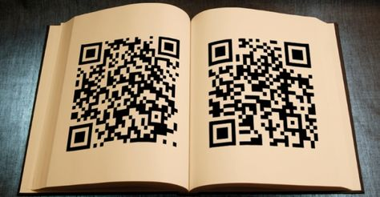Ventajas de usar la realidad aumentada en la educación
Ofrece una experiencia más emocional e inmersiva, lo que atrae el interés de alumnado. Gracias a esta experiencia inmersiva e interactiva, facilita el aprendizaje y la transmisión de conceptos.
Aumenta la motivación de los alumnos, al hacer las clases más amenas e interesantes. Fomenta la participación gracias a la interactividad. Rompe la tradicional monotonía de las clases gracias al uso de la tecnología, ofreciendo alicientes para aprender. Permite a los alumnos explotar las asignaturas y su realidad más cercana desde otra perspectiva. Prepara a los alumnos para la era digital.
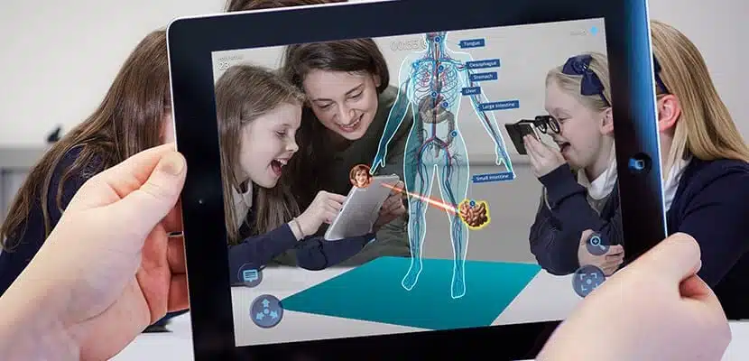Desventajas de usar la realidad aumentada en la educación
Sin embargo, la realidad aumentada en educación también se enfrena a una serie de inconvenientes o puntos a tener en cuenta. Los alumnos pueden caer en el aprendizaje vago. Consiste en dejar de lado el aprendizaje y la asimilación de conceptos en pos de las soluciones que proporciona la tecnología. La realidad aumentada se suele considerar como un elemento lúdico, por lo que es necesario saber cómo orientarla hacia el ámbito educativo, no hacia el mero recreo. Supone un reto para los docentes, que deben adaptarse y formarse en nuevos métodos de pedagogía emergente. Se necesita material didáctico específico y dispositivos adaptados a la realidad aumentada. Puede ser cara de implantar y es posible que algunos centros educativos no tengan presupuesto necesario y dependan de que se pongan en marcha subvenciones.
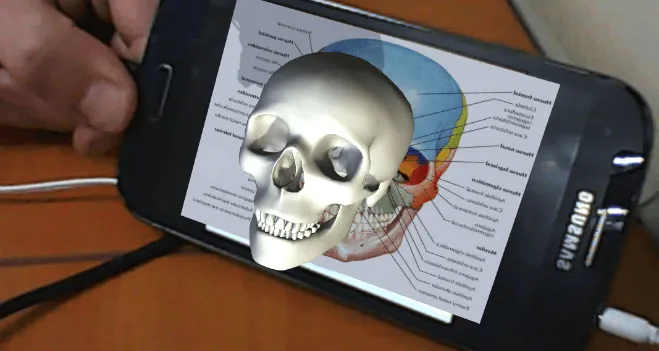